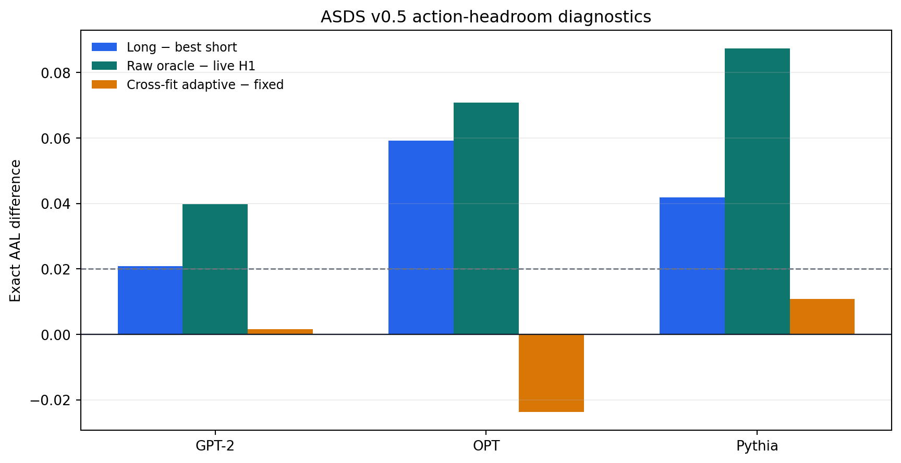
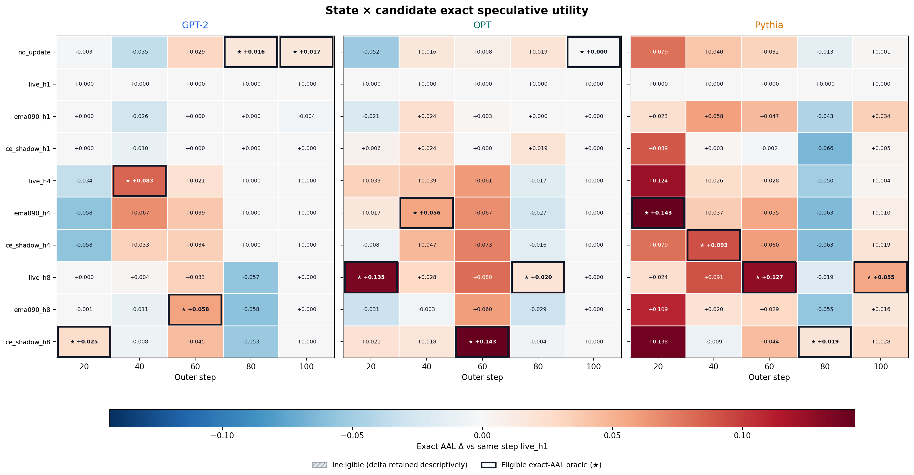
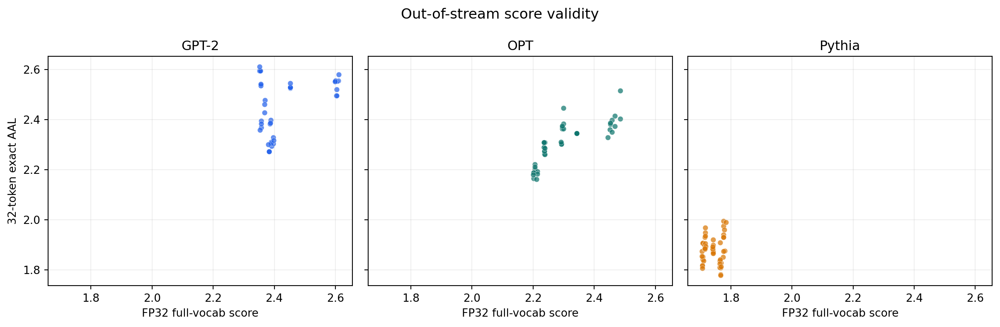

+0.021 / +0.059 / +0.042
Optimizer-Horizon Headroom v0.5 최종 보고서¶
ACTION-SPACE KILL
구조 검사는 통과했지만 H-step action headroom의 frozen conjunction이 실패했다. Engineering seed 99의 비파괴 shadow이며 selection seeds 6–8은 계속 봉인한다.
180 candidate rows
5,400 exact rows
32 generated tokens
FP32 eager serial full-prefix
Action-space gate
+0.040 / +0.071 / +0.087
+0.002 / -0.024 / +0.011
5/5 / 4/5 / 5/5
Score-validity gate
+0.225 / +0.287 / +0.110
+0.021 / +0.050 / +0.036
0.019 / 0.020 / 0.052
각 수치 순서: GPT-2 / OPT / Pythia. Prompt·sampling seed·step은 독립 replicate가 아니다.
최종 판정:
kill_v0_5_no_action_headroomStructural gate는 PASS했다. Long-action gain은
+.0209 / +.0593 / +.0419, raw oracle gain은 frozen rule상+.0398 / +.0708 / +.0874로 PASS했고, non-constant rank도5/5 / 4/5 / 5/5로 PASS했다. 그러나 가장 중요한 prompt-fold cross-fit headroom이+.0016 / -.0237 / +.0108, 즉 기준+.02를 넘긴 pair가0/3이어서 action gate는 FAIL했다. 따라서 score gate는 NOT_EVALUATED이며 Spearman+.225 / +.287 / +.110은 기술통계일 뿐이다.
Frozen contract는
ASDS_V0_5_ACTION_HEADROOM_PROTOCOL_KO.md와
ASDS_V0_5_ACTION_HEADROOM_MANIFEST.json이다.
권위 결과는
artifacts/asds_v0_5_action_headroom_analysis_v3/에
보존했다.
flowchart LR
S["동일한 draft + AdamW pre-state"] --> F["H=1 / 4 / 8 비파괴 fork"]
F --> E["32-token FP32 exact AAL"]
E --> A{"Action gate"}
A -->|cross-fit 0/3| K["KILL: portable headroom 없음"]
A -.->|PASS일 때만| Q["Score-validity gate"]
K --> N["Score: NOT_EVALUATED"]
1. 한눈에 보는 결과¶
| Gate | Frozen 기준 | GPT-2 ← DistilGPT-2 | OPT-350M ← OPT-125M | Pythia-410M ← Pythia-70M | 판정 |
|---|---|---|---|---|---|
| Structural | identity·분리·eligibility 모두 성립 | PASS | PASS | PASS | PASS |
| Long action − best short | >=+.02인 pair >=2/3, 최악 >=-.02 |
+.0209 | +.0593 | +.0419 | PASS, 3/3 |
| Raw oracle − live H1 | >=+.04인 pair >=2/3 |
+.0398 | +.0708 | +.0874 | PASS, 2/3 |
| Non-constant rank | >=4/5 step인 pair >=2/3 |
5/5 | 4/5 | 5/5 | PASS, 3/3 |
| Prompt-fold cross-fit | >=+.02인 pair >=2/3 |
+.0016 | −.0237 | +.0108 | FAIL, 0/3 |
| Score validity | Action gate PASS가 선행조건 | — | — | — | NOT_EVALUATED |
Raw oracle의 GPT 값 +.039838은 개별 threshold +.04에 아주 조금 못 미치지만,
OPT와 Pythia가 통과해 frozen 2/3 rule은 충족한다. 반면 cross-fit은 세 pair 모두
threshold 아래다. 즉 긴 optimizer trajectory는 후보 간 AAL 차이를 만들었지만,
그 state-wise 우열은 독립 prompt fold로 일반화되지 않았다.

2. 무엇을 시험했는가¶
2.1 독립 AR bidirectional setting¶
Target distribution을 \(p_\theta\), 독립 drafter를 \(q_\phi\)라 했다. 둘은 tokenizer-compatible token ID만 공유하며 backbone, embedding, hidden state, LM head, LoRA, gradient와 optimizer를 전혀 공유하지 않는다. MEDUSA, EAGLE, native MTP head는 범위 밖이다.
실제 100-step carrier는 ASDS v0.4의 Coordinate-live와 동일하다.
\[
\mathcal L_T
=\mathcal L_{\mathrm{CE}}
+\beta\mathcal L_{\mathrm{coord}}^{\mathrm{weighted}},
\qquad \beta=1,
\]
\[
\mathcal L_D
=\operatorname{HybridLK}_{\eta=3}
\left(\operatorname{sg}[p_{\theta_{t-1}}],q_{\phi_{t-1}}\right),
\qquad K=3.
\]
Target는 drafter가 유도한 경로에 aware하지만, target-side 보조항은 exact
speculative decoding의 필수조건이 아니라 이 연구의 bidirectional extension이다.
Hybrid LK와 acceptance-oriented loss의 선행 근거는
LK Losses, exact acceptance와 shared mass
\(1-\mathrm{TV}\)의 근거는
Leviathan et al.이다.
Coordinate target 보호 설계와 앞선 결과는
REPORT_COORDINATE_ARR_STAGE01_KO.md와
REPORT_ASDS_V0_4_SHADOW_KO.md에 정의돼 있다.
2.2 비파괴 block-action 후보¶
각 진단 step의 동일한 drafter parameter와 전체 AdamW pre-state에서 다음 10개 action을 fork했다.
| Teacher source | H=1 | H=4 | H=8 |
|---|---|---|---|
| live target | ✓ | ✓ | ✓ |
| EMA(.9) target | ✓ | ✓ | ✓ |
| cumulative CE-only target shadow | ✓ | ✓ | ✓ |
| true no-update | H=0 한 개 |
H는 speculative proposal 길이가 아니라 연속 draft optimizer update 수다.
각 source는 하나의 H=8 trajectory에서 H=1·4·8 state를 snapshot해 parameter,
Adam step, first/second moment를 함께 비교했다. Candidate는 한 번도 carrier에
commit하지 않았다.
Step 1은 zero-LR structural audit에만 사용했고, efficacy step은
{20,40,60,80,100}이다. Fit, calibration, exact-audit stream은 겹치지 않게
분리했다. Exact AAL은 fresh FP32 eager model에서
serial_full_prefix_per_target_position evaluator로 32-token rollout을 수행했다.
Teacher-forced overlap이나 rejected BF16 cache benchmark를 AAL로 대체하지 않았다.
2.3 왜 cross-fit이 핵심인가¶
Raw oracle은 같은 audit 상태를 본 뒤 매 step 최고 action을 고르는 상한이다. Cross-fit은 fold A에서 고른 state-wise action을 fold B에서 평가하고, fold A에서 고른 best-fixed action의 fold-B 성능과 비교한다. 반대 방향도 대칭 계산한다.
\[
H_{A\rightarrow B}
=\mathbb E_t A^B_{t,\arg\max_c A^A_{t,c}}
-\mathbb E_t A^B_{t,c^*_{\mathrm{fixed},A}},
\qquad
H_{\mathrm{CF}}=\frac{H_{A\rightarrow B}+H_{B\rightarrow A}}{2}.
\]
따라서 raw oracle은 “차이가 존재하는가”, cross-fit은 “그 차이가 새 prompt에서도 action 선택에 쓸 수 있는가”를 묻는다. Frozen protocol은 두 조건을 모두 요구했다.
3. 실행 무결성과 revision-3 provenance¶
권위 분석의 완결성은 다음과 같다.
| 항목 | 권위 count |
|---|---|
| Carrier training runs / history rows | 3 / 300 |
| Stage-0 runs / candidate rows | 3 / 30 |
| Shadow diagnostic candidate rows | 180 |
| Efficacy step summary rows | 15 |
| FP32 exact rollout rows | 5,400 |
| └ greedy / stochastic | 1,800 / 3,600 |
| Exact bridge checks | 120 |
| Figures | 3 |
180개 diagnostic candidate가 모두 사전 eligibility를 통과했다. 120개 exact bridge도 모두 성립했고, candidate enumeration order, nested H-state와 no-update full-state identity를 포함한 structural gate가 PASS했다.
세 개의 선행 root는 권위 utility에 섞지 않았다.
| Revision/root | 처리 이유 |
|---|---|
Stage-0 v1 |
Structural flag와 canonical ineligibility reason이 utility inspection 전에 materialize되지 않은 pre-contract root |
Shadow v1 |
Pythia step 20에서 batched-verifier greedy identity가 fail loud한 rejected measurement root |
Shadow v2 |
GPT는 완료했으나 OPT·Pythia가 step-80 audit 중 외부 SIGTERM을 받은 interrupted-execution root |
Stage-0 v2, shadow v3, analysis v3 |
세 pair fresh 실행으로 만든 유일한 권위 root |
Shadow v2에는 scientific assertion failure, candidate commit, analyzer gate 또는 utility inspection이 없었다. Revision 3은 scientific setting이나 candidate를 바꾼 post-hoc revision이 아니라 동일 frozen method의 fresh execution이다.
Revision-3 fingerprints:
- Manifest:
10ce15cab085ca7d6cea89e68232480ba1f2b4113a9faf40a14a3539b94549eb - Protocol:
f9f95e5d0165f36bc42c912733d1c7615c385bf8c537a01ca0dbcdfab72ea634 - Analyzer:
8d3e9c70a19c85682a2cef3b05e7ae53c03cfa418cacbf55a29d7d472a3fa437 - Analysis revision:
3 - Analysis manifest:
a93f61c70f63a6cb5afef056f736f2de521c69a7d7b931b86a7b900ace89bebf
4. Action 결과: separation은 있고 portable headroom은 없다¶
아래 heatmap은 같은 step의 live_h1 대비 exact AAL 차이다. H=4·8 action이 여러
state에서 양의 차이를 만들고 winner도 변한다. 그러나 별표로 표시되는 winner가
prompt fold를 바꿔도 안정적으로 우월하다는 뜻은 아니다.

Cross-fit의 실제 결과는 다음과 같다.
| Pair | A→B state-wise / fixed AAL | B→A state-wise / fixed AAL | 평균 headroom |
|---|---|---|---|
| GPT-2 ← DistilGPT-2 | 2.5363 / 2.5299 | 2.4330 / 2.4362 | +.0016 |
| OPT-350M ← OPT-125M | 2.3715 / 2.3911 | 2.2800 / 2.3078 | −.0237 |
| Pythia-410M ← Pythia-70M | 1.8310 / 1.8256 | 1.9715 / 1.9553 | +.0108 |
이 결과는 “H=4·8이 아무 효과도 없다”는 뜻이 아니다. Long gain과 raw oracle이 양수이므로 block update는 실제 action separation을 만들었다. 다만 그 이득이 prompt-fold 특이적인 ranking을 넘어 적응적 선택 가치로 남지 않았다. 특히 OPT에서는 fold를 바꾸자 state-wise 선택이 best-fixed보다 오히려 나빴다.
5. Score는 판정하지 않았다¶
Action-headroom gate가 score gate의 선행조건이다. Cross-fit 실패 후 selector score를 튜닝하면 선택할 가치가 검증되지 않은 action space에 맞추는 post-hoc 최적화가 된다. 따라서 다음 수치는 재현성을 위해 남긴 descriptive diagnostic이며 score-validity evidence가 아니다.
| Pair | Full-vocab Spearman | Score-selected − live H1 | Oracle regret | Best fixed / exact AAL |
|---|---|---|---|---|
| GPT-2 ← DistilGPT-2 | +.225 | +.0212 | .0186 | live_h4 / 2.4831 |
| OPT-350M ← OPT-125M | +.287 | +.0503 | .0205 | live_h8 / 2.3495 |
| Pythia-410M ← Pythia-70M | +.110 | +.0358 | .0517 | live_h8 / 1.9086 |
Frozen Spearman threshold는 +.50이고 통과 pair는 0/3이다. “selected − live”가
세 pair에서 양수이고 regret가 두 pair에서 낮더라도, action prerequisite가 실패했기
때문에 이들을 부분 PASS나 selector 효능으로 승격할 수 없다.

live_h4 / live_h8 / live_h8이 pair별 best fixed였다는 관찰도 효능 결과가 아니다.
이 후보들은 exact audit를 본 뒤 고른 descriptive oracle이고, H=4·8은 H=1보다
각각 추가 draft optimizer microstep과 학습 compute를 요구한다. Prospective fixed-H
baseline, compute-matched control, 실제 commit과 누적 co-adaptation을 시험하지
않았으므로 “H=4·8을 적용하면 시스템이 개선된다”고 결론낼 수 없다.
6. Target 보호에 대해 말할 수 있는 범위¶
Carrier는 archived Coordinate-live의 target/draft full-state와 exact했다. 따라서 v0.4의 detach 대비 target-NLL margin도 그대로 재현됐다.
| Pair | Carrier target NLL | Δ target NLL vs detach | Frozen <=+.005 |
|---|---|---|---|
| GPT-2 ← DistilGPT-2 | 3.927255 | +.001238 | PASS |
| OPT-350M ← OPT-125M | 3.653461 | −.001003 | PASS |
| Pythia-410M ← Pythia-70M | 3.317272 | −.005284 | PASS |
이는 실제로 실행된 Coordinate-live carrier의 target 보호 증거다. 반면 H=4·8 candidate는 비파괴 shadow였고 commit되지 않았다. 따라서 candidate를 적용한 뒤 drafter-aware target가 다시 co-adapt할 때의 누적 target NLL, downstream quality, applied AAL과 Adam carryover 안전성은 이 실험으로 확립되지 않았다.
7. 결론과 다음 연구 방향¶
v0.5의 결론은 다음 한 문장으로 정리된다.
Generic fit stream에서 optimizer horizon을 늘리면 raw exact-AAL separation은 생기지만, 다른 prompt fold로 이동 가능한 adaptive action headroom은 생기지 않았다. 그러므로 v0.5 action family와 selector는 종료한다.
다음 pivot은 selector를 더 복잡하게 만드는 것이 아니라 verification-error replay × loss의 2×2 원인 분해가 타당하다.
| 축 | Control | 제안 treatment |
|---|---|---|
| Fit data | 기존 generic disjoint fit batch | 실제 verifier의 accepted-prefix와 first-rejection 상태를 replay |
| Draft loss | 현재 Hybrid LK | rejection-exposed 위치를 강조한 acceptance-oriented loss |
근거는 세 가지다.
- Long/raw-oracle PASS는 추가 draft update가 exact AAL을 움직일 수 있음을 보였다.
- Cross-fit
0/3은 generic fit에서 생긴 state-wise ranking이 prompt fold를 넘지 못했음을 보였다. - 약한 score 상관은 현재 우선순위가 score fitting이 아니라 action을 만드는 data/objective임을 시사한다.
첫 실험은 target carrier와 bidirectional Coordinate objective를 그대로 두고,
draft-side candidate 생성만 위 2×2로 바꾸는 non-mutating shadow여야 한다. H와
token exposure, optimizer step, RNG, calibration/audit stream을 맞추고 cross-fit
headroom을 다시 primary gate로 둔다. 이 gate가 통과하기 전에는 selector
튜닝, applied commit 또는 sealed seed 6–8을 열지 않는다. 통과한 뒤에만
compute-matched fixed-H baseline, actual commit, target NLL/downstream non-inferiority,
exact AAL과 latency를 함께 시험한다.
Draft-induced error path를 학습 신호로 쓰는 방향에는 Draft-OPD 같은 관련 선례가 있지만, 위 2×2 설계가 이 독립-AR·bidirectional·target-protected setting에서 작동한다는 것은 아직 시험하지 않은 후속 가설이다.
8. 권위 산출물¶
- Gate JSON
artifacts/asds_v0_5_action_headroom_analysis_v3/asds_v0_5_action_headroom_gate.json - Pair summary CSV
artifacts/asds_v0_5_action_headroom_analysis_v3/asds_v0_5_pair_mechanism_summary.csv - Step summary CSV
artifacts/asds_v0_5_action_headroom_analysis_v3/asds_v0_5_step_mechanism_summary.csv - Candidate diagnostics CSV
artifacts/asds_v0_5_action_headroom_analysis_v3/asds_v0_5_candidate_diagnostics.csv - Exact rollout rows
artifacts/asds_v0_5_action_headroom_analysis_v3/asds_v0_5_exact_rows.csv - Exact bridge checks
artifacts/asds_v0_5_action_headroom_analysis_v3/asds_v0_5_exact_bridge_checks.csv - Analysis manifest
artifacts/asds_v0_5_action_headroom_analysis_v3/asds_v0_5_action_headroom_analysis_manifest.json
해석 단위는 training seed이며 이 패널은 exposed engineering seed 99 하나뿐이다. Prompt, diagnostic step, corpus, sampling seed, token과 decoding round는 독립 replicate가 아니다. Transparent benchmark latency도 production serving throughput이 아니다.